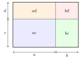

Multiplying PolynomialsPhép nhân đa thức
Grade 8 · Topic: PolynomialsLớp 8 · Chủ đề: Đa thức
1Lesson IntroductionGiới thiệu bài học
Learning goalsMục tiêu bài học
By the end of this lesson you can:
Sau bài học này, em có thể:
multiply a monomial by a polynomial;
thực hiện được phép nhân đơn thức với đa thức;
multiply a polynomial by a polynomial;
thực hiện được phép nhân đa thức với đa thức;
simplify expressions and evaluate them; show that an expression does not depend on the variables;
rút gọn và tính giá trị biểu thức; chứng tỏ một biểu thức không phụ thuộc vào giá trị của biến;
write areas, volumes and amounts of money as polynomials.
viết được diện tích, thể tích, số tiền dưới dạng đa thức.
2Mathematical VocabularyTừ vựng Toán học
product – the result of a multiplication: \(A\cdot B\).
Tích – kết quả của phép nhân: \(A\cdot B\).
distributive property – \(A(B+C)=AB+AC\).
Tính chất phân phối – \(A(B+C)=AB+AC\).
commutative property of multiplication – \(A\cdot B=B\cdot A\).
Tính chất giao hoán của phép nhân – \(A\cdot B=B\cdot A\).
associative property of multiplication – \((A\cdot B)\cdot C=A\cdot(B\cdot C)\).
Tính chất kết hợp của phép nhân – \((A\cdot B)\cdot C=A\cdot(B\cdot C)\).
expand – write a product as a sum of terms.
Khai triển – viết một tích thành tổng các hạng tử.
independent of the variables – the value is the same for all values of the variables.
Không phụ thuộc vào giá trị của biến – biểu thức có cùng một giá trị với mọi giá trị của biến.
3Useful English PhrasesCụm từ tiếng Anh thường gặp
Multiply the polynomial by the monomial.
Nhân đơn thức với đa thức.
To multiply a polynomial by a monomial, we multiply each term of the polynomial by the monomial.
Muốn nhân một đơn thức với một đa thức, ta nhân đơn thức với từng hạng tử của đa thức rồi cộng các tích.
To multiply two polynomials, we multiply each term of the first polynomial by each term of the second polynomial.
Muốn nhân hai đa thức, ta nhân mỗi hạng tử của đa thức này với từng hạng tử của đa thức kia rồi cộng các tích.
Simplify the expression and evaluate it for \(x=-2,\ y=3\).
Rút gọn biểu thức rồi tính giá trị tại \(x=-2,\ y=3\).
Show that the value of the expression is independent of the variables.
Chứng tỏ giá trị của biểu thức không phụ thuộc vào giá trị của biến.
4Prerequisite ReviewÔn tập kiến thức nền
Multiplying monomials (Lesson 1). \(2x^2y\cdot 3xy^3=6x^3y^4\): multiply the coefficients, add the exponents.
Nhân hai đơn thức (Bài 1). \(2x^2y\cdot 3xy^3=6x^3y^4\): nhân các hệ số, cộng số mũ.
Distributive property (grade 7). \(a(b+c)=ab+ac\).
Tính chất phân phối (lớp 7). \(a(b+c)=ab+ac\).
5TheoryLý thuyết
5.1 Multiplying a monomial by a polynomialNhân đơn thức với đa thức
RuleQuy tắc
Multiply the monomial by each term of the polynomial, then add the products: \(A(B+C)=AB+AC\).
Muốn nhân một đơn thức với một đa thức, ta nhân đơn thức đó với từng hạng tử của đa thức rồi cộng các tích với nhau: \(A(B+C)=AB+AC\).
\(-3x^2y(2x-y+4)=-6x^3y+3x^2y^2-12x^2y\).
\(-3x^2y(2x-y+4)=-6x^3y+3x^2y^2-12x^2y\).
5.2 Multiplying two polynomialsNhân đa thức với đa thức
RuleQuy tắc
Multiply each term of the first polynomial by each term of the second, then add the products and combine like terms.
Muốn nhân một đa thức với một đa thức, ta nhân mỗi hạng tử của đa thức này với từng hạng tử của đa thức kia rồi cộng các tích với nhau (và thu gọn).
\((a+b)(c+d)=ac+ad+bc+bd\). Example: \((x+2)(x-5)=x^2-5x+2x-10=x^2-3x-10\).
\((a+b)(c+d)=ac+ad+bc+bd\). Ví dụ: \((x+2)(x-5)=x^2-5x+2x-10=x^2-3x-10\).

Properties and countingTính chất
Multiplication of polynomials is commutative and associative, and it distributes over addition.
Phép nhân đa thức có tính chất giao hoán của phép nhân, tính chất kết hợp của phép nhân và tính chất phân phối đối với phép cộng.
A polynomial with \(m\) terms times a polynomial with \(n\) terms gives \(m\cdot n\) products before combining. The degree of the product is the sum of the degrees.
Nhân đa thức có \(m\) hạng tử với đa thức có \(n\) hạng tử, trước khi thu gọn ta được \(m\cdot n\) tích. Bậc của tích bằng tổng bậc của hai đa thức.
Watch out!Lưu ý
Do not forget the middle terms: \((x+3)(x+4)=x^2+7x+12\), not \(x^2+12\).
Không bỏ sót các tích ở giữa: \((x+3)(x+4)=x^2+7x+12\), không phải \(x^2+12\).
6Worked ExamplesVí dụ có lời giải
ExampleVí dụ 1RememberingNhận biết – Monomial × polynomialNhân đơn thức với đa thức
Find the product \(2x^2y(3xy-5y^2+1)\).
Thực hiện phép nhân \(2x^2y(3xy-5y^2+1)\).
Analysis: Multiply \(2x^2y\) by each of the three terms.
Phân tích: Nhân \(2x^2y\) với từng hạng tử trong ngoặc.
\(2x^2y\cdot3xy=6x^3y^2\); \(2x^2y\cdot(-5y^2)=-10x^2y^3\); \(2x^2y\cdot1=2x^2y\).
\(2x^2y\cdot3xy=6x^3y^2\); \(2x^2y\cdot(-5y^2)=-10x^2y^3\); \(2x^2y\cdot1=2x^2y\).
\(6x^3y^2-10x^2y^3+2x^2y\).
\(6x^3y^2-10x^2y^3+2x^2y\).
ExampleVí dụ 2UnderstandingThông hiểu – Polynomial × polynomialNhân hai đa thức
Expand \((x-2y)(x^2+3xy-y^2)\).
Thực hiện phép nhân \((x-2y)(x^2+3xy-y^2)\).
Analysis: Multiply \(x\), then \(-2y\), by each term of the second bracket.
Phân tích: Lần lượt nhân \(x\) và \(-2y\) với từng hạng tử của ngoặc thứ hai.
\(x(x^2+3xy-y^2)=x^3+3x^2y-xy^2\).
\(x(x^2+3xy-y^2)=x^3+3x^2y-xy^2\).
\(-2y(x^2+3xy-y^2)=-2x^2y-6xy^2+2y^3\).
\(-2y(x^2+3xy-y^2)=-2x^2y-6xy^2+2y^3\).
Add: \(x^3+x^2y-7xy^2+2y^3\).
Cộng lại và thu gọn: \(x^3+x^2y-7xy^2+2y^3\).
\(x^3+x^2y-7xy^2+2y^3\).
\(x^3+x^2y-7xy^2+2y^3\).
ExampleVí dụ 3UnderstandingThông hiểu – Simplify, then evaluateRút gọn rồi tính giá trị
Simplify \(A=x(x^2-3y)-x^2(x+y)+3xy\), then evaluate it at \(x=-2,\ y=3\).
Rút gọn biểu thức \(A=x(x^2-3y)-x^2(x+y)+3xy\) rồi tính giá trị tại \(x=-2,\ y=3\).
Analysis: Expand each product, then combine.
Phân tích: Khai triển từng tích rồi thu gọn.
\(A=x^3-3xy-x^3-x^2y+3xy=-x^2y\).
\(A=x^3-3xy-x^3-x^2y+3xy=-x^2y\).
\(A=-(-2)^2\cdot3=-12\).
\(A=-(-2)^2\cdot3=-12\).
\(A=-x^2y=-12\).
\(A=-x^2y\); giá trị bằng \(-12\).
ExampleVí dụ 4Basic applicationVận dụng thấp – Independent of the variablesGiá trị không phụ thuộc vào biến
Show that \(P=(x^2+y)(x-1)-(x^2-y)(x+1)+2x^2-2xy+7\) does not depend on \(x\) and \(y\).
Chứng tỏ giá trị của biểu thức \(P=(x^2+y)(x-1)-(x^2-y)(x+1)+2x^2-2xy+7\) không phụ thuộc vào giá trị của \(x\) và \(y\).
Analysis: Expand and show that all terms with variables cancel.
Phân tích: Khai triển và chứng tỏ mọi hạng tử chứa biến đều triệt tiêu.
\((x^2+y)(x-1)=x^3-x^2+xy-y\); \((x^2-y)(x+1)=x^3+x^2-xy-y\).
\((x^2+y)(x-1)=x^3-x^2+xy-y\); \((x^2-y)(x+1)=x^3+x^2-xy-y\).
\(P=x^3-x^2+xy-y-x^3-x^2+xy+y+2x^2-2xy+7=7\).
\(P=x^3-x^2+xy-y-x^3-x^2+xy+y+2x^2-2xy+7=7\).
\(P=7\) for all \(x\), \(y\).
\(P=7\) với mọi \(x\), \(y\): giá trị của \(P\) không phụ thuộc vào biến.
ExampleVí dụ 5ApplicationVận dụng – Volume of a tankThể tích bể nước
A tank has a rectangular base \((x+4)\) dm by \((x+1)\) dm and height \(x\) dm. Write its volume as a polynomial. How many liters does it hold when \(x=5\)?
Một bể nước có đáy là hình chữ nhật kích thước \((x+4)\) dm và \((x+1)\) dm, chiều cao \(x\) dm. Viết đa thức biểu thị thể tích của bể. Khi \(x=5\), bể chứa được bao nhiêu lít nước?
Analysis: Volume = length × width × height; 1 dm³ = 1 liter.
Phân tích: Thể tích = dài × rộng × cao; 1 dm³ = 1 lít.
\(V=x(x+4)(x+1)=x(x^2+5x+4)=x^3+5x^2+4x\) (dm³).
\(V=x(x+4)(x+1)=x(x^2+5x+4)=x^3+5x^2+4x\) (dm³).
\(x=5\): \(V=125+125+20=270\) (dm³).
\(x=5\): \(V=125+125+20=270\) (dm³).
\(V=x^3+5x^2+4x\); the tank holds 270 liters.
\(V=x^3+5x^2+4x\); bể chứa được 270 lít nước.
7PracticeBài tập luyện tập
A. Multiple ChoiceA. Trắc nghiệm nhiều lựa chọn
Find the product \(4x^2y(x^2y^2+4xy^2+2x^2)\).
Thực hiện phép nhân \(4x^2y(x^2y^2+4xy^2+2x^2)\).
Answer: a. Multiply the monomial by each term of the polynomial.
Đáp án a. Nhân đơn thức với từng hạng tử của đa thức rồi cộng các tích.
Expand \((5x+5y)(3x-4y)\).
Thực hiện phép nhân \((5x+5y)(3x-4y)\).
Answer: b. Multiply each term of the first polynomial by each term of the second, then combine: \(15x^2-5xy-20y^2\).
Đáp án b. Nhân mỗi hạng tử của đa thức thứ nhất với từng hạng tử của đa thức thứ hai rồi thu gọn: \(15x^2-5xy-20y^2\).
In the product \((x-1)(x^2-2x-5)\), what is the coefficient of \(x\)?
Trong tích \((x-1)(x^2-2x-5)\), hệ số của \(x\) là
Answer: c. The product is \(x^3-3x^2-3x+5\).
Đáp án c. Tích bằng \(x^3-3x^2-3x+5\).
B. True or FalseB. Đúng hoặc sai
\((x-7)(x+5)=x^2-2x-35\).
\((x-7)(x+5)=x^2-2x-35\).
True. \((x-7)(x+5)=x^2-2x-35\).
Đúng. \((x-7)(x+5)=x^2-2x-35\).
The product \((-x^3y^3-8x^3y^2)(-xy^2+3)\) is a polynomial of degree 6.
Tích \((-x^3y^3-8x^3y^2)(-xy^2+3)\) là một đa thức bậc 6.
False. The product has degree \(6+3=9\).
Sai. Tích có bậc \(6+3=9\).
C. Short AnswerC. Trả lời ngắn
Simplify \(A=x(x^2-3y)-x^2(x+3y)+y(3x+y)\), then find its value at \(x=3,\ y=2\).
Rút gọn biểu thức \(A=x(x^2-3y)-x^2(x+3y)+y(3x+y)\) rồi tính giá trị tại \(x=3,\ y=2\).
Enter a number.
Nhập một số.
Answer: -50. \(A=-3x^2y+y^2=-50\).
Đáp số: -50. \(A=-3x^2y+y^2=-50\).
Show that the value of \(P=(x^2+2y)(x+1)-(x^2-2y)(x-1)-2x^2-4xy+15\) does not depend on the variables. What is this value?
Chứng tỏ giá trị của biểu thức \(P=(x^2+2y)(x+1)-(x^2-2y)(x-1)-2x^2-4xy+15\) không phụ thuộc vào giá trị của biến. Giá trị đó bằng bao nhiêu?
Enter a number.
Nhập một số.
Answer: 15. The first two products give \(2x^2+4xy\); everything cancels except \(15\).
Đáp số: 15. Hiệu hai tích đầu bằng \(2x^2+4xy\); các hạng tử chứa biến triệt tiêu hết, còn lại \(15\).
D1. Self-practice – RememberingD1. Tự luyện – Mức Nhận biết
To multiply a monomial by a polynomial, we…
Muốn nhân một đơn thức với một đa thức, ta…
Answer: a. Distributive property: \(A(B+C)=AB+AC\).
Đáp án a. Tính chất phân phối: \(A(B+C)=AB+AC\).
Find the product \(-3x^3yz^2\cdot (-4x^2y^3)\).
Tính tích \(-3x^3yz^2\cdot (-4x^2y^3)\).
Answer: d. Multiply the coefficients, add the exponents.
Đáp án d. Nhân các hệ số, cộng số mũ của cùng một biến.
Before combining like terms, how many products do we get when we expand \((-4x^4-x^3)(-2y^3-3y^2-y-1)\)?
Khi nhân \((-4x^4-x^3)(-2y^3-3y^2-y-1)\), trước khi thu gọn ta được bao nhiêu tích?
Answer: b. Each of the 2 terms is multiplied by each of the 4 terms: \(2\cdot4=8\) products.
Đáp án b. Mỗi hạng tử trong 2 hạng tử nhân với từng hạng tử trong 4 hạng tử: \(2\cdot4=8\) tích.
D2. Self-practice – UnderstandingD2. Tự luyện – Mức Thông hiểu
Expand \((2x-3)(x^2-2x-3)\).
Thực hiện phép nhân \((2x-3)(x^2-2x-3)\).
Answer: a. \(2x^3-7x^2+9\).
Đáp án a. \(2x^3-7x^2+9\).
Simplify \(x(x+2y)-y(-3x+y)\).
Rút gọn biểu thức \(x(x+2y)-y(-3x+y)\).
Answer: c. \(x^2+5xy-y^2\).
Đáp án c. \(x^2+5xy-y^2\).
Expand \(x^2(x+1)(x-4)\).
Thực hiện phép nhân \(x^2(x+1)(x-4)\).
Answer: d. First \((x+1)(x-4)=x^2-3x-4\), then multiply by \(x^2\).
Đáp án d. Tính \((x+1)(x-4)=x^2-3x-4\) rồi nhân với \(x^2\).
D3. Self-practice – Basic applicationD3. Tự luyện – Mức Vận dụng thấp
Find the value of \(A=x(x^2-3y)-x^2(x+4y)+y(-x+y)\) at \(x=1,\ y=2\).
Tính giá trị của biểu thức \(A=x(x^2-3y)-x^2(x+4y)+y(-x+y)\) tại \(x=1,\ y=2\).
Answer: a. Simplify first: \(A=-4x^2y-4xy+y^2\), so \(A=-12\).
Đáp án a. Rút gọn trước: \(A=-4x^2y-4xy+y^2\), suy ra \(A=-12\).
Find \(x\), given that \(x(x+6)-(x-4)(x+4)=70\).
Tìm \(x\), biết \(x(x+6)-(x-4)(x+4)=70\).
Answer: b. \(x^2+6x-x^2+16=70\Rightarrow 6x=54\Rightarrow x=9\).
Đáp án b. \(x^2+6x-x^2+16=70\Rightarrow 6x=54\Rightarrow x=9\).
The value of \(P=(x^2+2y)(x+1)-(x^2-2y)(x-1)-2x^2-4xy+9\) does not depend on \(x\) and \(y\). Find it.
Giá trị của biểu thức \(P=(x^2+2y)(x+1)-(x^2-2y)(x-1)-2x^2-4xy+9\) không phụ thuộc vào \(x\), \(y\). Giá trị đó là
Answer: a. Expanding gives \(P=9\).
Đáp án a. Khai triển và thu gọn được \(P=9\).
D4. Self-practice – Advanced applicationD4. Tự luyện – Mức Vận dụng
A tank has a rectangular base \((x+3)\) dm by \((x+4)\) dm and height \(x\) dm. Write its volume as a polynomial and find how many liters it holds when \(x=8\).
Một bể nước có đáy là hình chữ nhật kích thước \((x+3)\) dm và \((x+4)\) dm, chiều cao \(x\) dm. Viết đa thức biểu thị thể tích của bể và tính bể chứa được bao nhiêu lít nước khi \(x=8\).
Answer: a. \(V=x(x+3)(x+4)=x^3+7x^2+12x\); at \(x=8\): \(1056\) dm³ = 1056 liters.
Đáp án a. \(V=x(x+3)(x+4)=x^3+7x^2+12x\); khi \(x=8\): \(1056\) dm³ = 1056 lít.
A photo is \(x\) cm by \(y\) cm. It is put in a frame of width 2 cm on every side. Write the area of the frame (not the photo) as a polynomial and find it when \(x=25,\ y=12\).
Một bức ảnh hình chữ nhật kích thước \(x\) cm và \(y\) cm được lồng vào khung rộng 2 cm ở mỗi phía. Viết đa thức biểu thị diện tích phần khung (không tính ảnh) và tính diện tích đó khi \(x=25,\ y=12\).
Answer: d. \((x+4)(y+4)-xy=4x+4y+16\); at the given values: \(164\) cm².
Đáp án d. \((x+4)(y+4)-xy=4x+4y+16\); thay số được \(164\) cm².
A deposit of 50,000,000 VND earns \(x=5\%\) interest per year, compounded yearly. After 2 years the amount is \(50\,000\,000(1+x)(1+x)\) VND. How much is it?
Gửi tiết kiệm 50 000 000 đồng với lãi suất \(x=5\%\) một năm, tiền lãi năm trước được nhập vào gốc năm sau (lãi kép). Sau 2 năm, số tiền có được là \(50\,000\,000(1+x)(1+x)\) đồng. Số tiền đó là bao nhiêu?
Answer: d. \((1+x)(1+x)=1+2x+x^2\); with \(x=0.05\): the amount is 55,125,000 VND.
Đáp án d. \((1+x)(1+x)=1+2x+x^2\); với \(x=0{,}05\): số tiền là 55 125 000 đồng.
A. Multiple ChoiceA. Trắc nghiệm nhiều lựa chọn
Find the product \(-4x^2y(-5x^2y^2-x^2-5x)\).
Thực hiện phép nhân \(-4x^2y(-5x^2y^2-x^2-5x)\).
Answer: d. Multiply the monomial by each term of the polynomial.
Đáp án d. Nhân đơn thức với từng hạng tử của đa thức rồi cộng các tích.
Expand \((3x-y)(-x+2y)\).
Thực hiện phép nhân \((3x-y)(-x+2y)\).
Answer: c. Multiply each term of the first polynomial by each term of the second, then combine: \(-3x^2+7xy-2y^2\).
Đáp án c. Nhân mỗi hạng tử của đa thức thứ nhất với từng hạng tử của đa thức thứ hai rồi thu gọn: \(-3x^2+7xy-2y^2\).
In the product \((5x-2)(x^2-3x+1)\), what is the coefficient of \(x\)?
Trong tích \((5x-2)(x^2-3x+1)\), hệ số của \(x\) là
Answer: a. The product is \(5x^3-17x^2+11x-2\).
Đáp án a. Tích bằng \(5x^3-17x^2+11x-2\).
B. True or FalseB. Đúng hoặc sai
\((x-8)(x+8)=x^2-64\).
\((x-8)(x+8)=x^2-64\).
True. \((x-8)(x+8)=x^2-64\).
Đúng. \((x-8)(x+8)=x^2-64\).
The product \((2y^2-2y)(2y^2-6y)\) is a polynomial of degree 4.
Tích \((2y^2-2y)(2y^2-6y)\) là một đa thức bậc 4.
True. The product has degree \(2+2=4\).
Đúng. Tích có bậc \(2+2=4\).
C. Short AnswerC. Trả lời ngắn
Simplify \(A=x(x^2-3y)-x^2(x+y)+y(4x+y)\), then find its value at \(x=-1,\ y=-2\).
Rút gọn biểu thức \(A=x(x^2-3y)-x^2(x+y)+y(4x+y)\) rồi tính giá trị tại \(x=-1,\ y=-2\).
Enter a number.
Nhập một số.
Answer: 8. \(A=-x^2y+xy+y^2=8\).
Đáp số: 8. \(A=-x^2y+xy+y^2=8\).
Show that the value of \(P=(x^2+3y)(x+1)-(x^2-3y)(x-1)-2x^2-6xy-12\) does not depend on the variables. What is this value?
Chứng tỏ giá trị của biểu thức \(P=(x^2+3y)(x+1)-(x^2-3y)(x-1)-2x^2-6xy-12\) không phụ thuộc vào giá trị của biến. Giá trị đó bằng bao nhiêu?
Enter a number.
Nhập một số.
Answer: -12. The first two products give \(2x^2+6xy\); everything cancels except \(-12\).
Đáp số: -12. Hiệu hai tích đầu bằng \(2x^2+6xy\); các hạng tử chứa biến triệt tiêu hết, còn lại \(-12\).
D1. Self-practice – RememberingD1. Tự luyện – Mức Nhận biết
Which rule is used to multiply a monomial by a polynomial?
Quy tắc nhân đơn thức với đa thức là
Answer: d. Distributive property: \(A(B+C)=AB+AC\).
Đáp án d. Tính chất phân phối: \(A(B+C)=AB+AC\).
Find the product \(-4x^2yz^2\cdot 2x^3y\).
Tính tích \(-4x^2yz^2\cdot 2x^3y\).
Answer: b. Multiply the coefficients, add the exponents.
Đáp án b. Nhân các hệ số, cộng số mũ của cùng một biến.
Before combining like terms, how many products do we get when we expand \((-5x^4-4x^3)(-3y^3-3y^2+3y-2)\)?
Khi nhân \((-5x^4-4x^3)(-3y^3-3y^2+3y-2)\), trước khi thu gọn ta được bao nhiêu tích?
Answer: a. Each of the 2 terms is multiplied by each of the 4 terms: \(2\cdot4=8\) products.
Đáp án a. Mỗi hạng tử trong 2 hạng tử nhân với từng hạng tử trong 4 hạng tử: \(2\cdot4=8\) tích.
D2. Self-practice – UnderstandingD2. Tự luyện – Mức Thông hiểu
Expand \((3x-4)(x^2-4x-2)\).
Thực hiện phép nhân \((3x-4)(x^2-4x-2)\).
Answer: a. \(3x^3-16x^2+10x+8\).
Đáp án a. \(3x^3-16x^2+10x+8\).
Simplify \(x(x-5y)-y(3x+y)\).
Rút gọn biểu thức \(x(x-5y)-y(3x+y)\).
Answer: c. \(x^2-8xy-y^2\).
Đáp án c. \(x^2-8xy-y^2\).
Expand \(2x^2(x-3)(x+4)\).
Thực hiện phép nhân \(2x^2(x-3)(x+4)\).
Answer: c. First \((x-3)(x+4)=x^2+x-12\), then multiply by \(2x^2\).
Đáp án c. Tính \((x-3)(x+4)=x^2+x-12\) rồi nhân với \(2x^2\).
D3. Self-practice – Basic applicationD3. Tự luyện – Mức Vận dụng thấp
Find the value of \(A=x(x^2+4y)-x^2(x-2y)+y(-3x+y)\) at \(x=3,\ y=1\).
Tính giá trị của biểu thức \(A=x(x^2+4y)-x^2(x-2y)+y(-3x+y)\) tại \(x=3,\ y=1\).
Answer: d. Simplify first: \(A=2x^2y+xy+y^2\), so \(A=22\).
Đáp án d. Rút gọn trước: \(A=2x^2y+xy+y^2\), suy ra \(A=22\).
Find \(x\), given that \(x(x+4)-(x-3)(x+3)=29\).
Tìm \(x\), biết \(x(x+4)-(x-3)(x+3)=29\).
Answer: a. \(x^2+4x-x^2+9=29\Rightarrow 4x=20\Rightarrow x=5\).
Đáp án a. \(x^2+4x-x^2+9=29\Rightarrow 4x=20\Rightarrow x=5\).
The value of \(P=(x^2+y)(x+1)-(x^2-y)(x-1)-2x^2-2xy+7\) does not depend on \(x\) and \(y\). Find it.
Giá trị của biểu thức \(P=(x^2+y)(x+1)-(x^2-y)(x-1)-2x^2-2xy+7\) không phụ thuộc vào \(x\), \(y\). Giá trị đó là
Answer: a. Expanding gives \(P=7\).
Đáp án a. Khai triển và thu gọn được \(P=7\).
D4. Self-practice – Advanced applicationD4. Tự luyện – Mức Vận dụng
A tank has a rectangular base \((x+1)\) dm by \((x+2)\) dm and height \(x\) dm. Write its volume as a polynomial and find how many liters it holds when \(x=4\).
Một bể nước có đáy là hình chữ nhật kích thước \((x+1)\) dm và \((x+2)\) dm, chiều cao \(x\) dm. Viết đa thức biểu thị thể tích của bể và tính bể chứa được bao nhiêu lít nước khi \(x=4\).
Answer: d. \(V=x(x+1)(x+2)=x^3+3x^2+2x\); at \(x=4\): \(120\) dm³ = 120 liters.
Đáp án d. \(V=x(x+1)(x+2)=x^3+3x^2+2x\); khi \(x=4\): \(120\) dm³ = 120 lít.
A photo is \(x\) cm by \(y\) cm. It is put in a frame of width 2 cm on every side. Write the area of the frame (not the photo) as a polynomial and find it when \(x=26,\ y=10\).
Một bức ảnh hình chữ nhật kích thước \(x\) cm và \(y\) cm được lồng vào khung rộng 2 cm ở mỗi phía. Viết đa thức biểu thị diện tích phần khung (không tính ảnh) và tính diện tích đó khi \(x=26,\ y=10\).
Answer: a. \((x+4)(y+4)-xy=4x+4y+16\); at the given values: \(160\) cm².
Đáp án a. \((x+4)(y+4)-xy=4x+4y+16\); thay số được \(160\) cm².
A deposit of 80,000,000 VND earns \(x=7\%\) interest per year, compounded yearly. After 2 years the amount is \(80\,000\,000(1+x)(1+x)\) VND. How much is it?
Gửi tiết kiệm 80 000 000 đồng với lãi suất \(x=7\%\) một năm, tiền lãi năm trước được nhập vào gốc năm sau (lãi kép). Sau 2 năm, số tiền có được là \(80\,000\,000(1+x)(1+x)\) đồng. Số tiền đó là bao nhiêu?
Answer: c. \((1+x)(1+x)=1+2x+x^2\); with \(x=0.07\): the amount is 91,592,000 VND.
Đáp án c. \((1+x)(1+x)=1+2x+x^2\); với \(x=0{,}07\): số tiền là 91 592 000 đồng.
A. Multiple ChoiceA. Trắc nghiệm nhiều lựa chọn
Find the product \(5xy^2(-x^2y^2-4xy-2y)\).
Thực hiện phép nhân \(5xy^2(-x^2y^2-4xy-2y)\).
Answer: c. Multiply the monomial by each term of the polynomial.
Đáp án c. Nhân đơn thức với từng hạng tử của đa thức rồi cộng các tích.
Expand \((2x-2y)(-2x+5y)\).
Thực hiện phép nhân \((2x-2y)(-2x+5y)\).
Answer: d. Multiply each term of the first polynomial by each term of the second, then combine: \(-4x^2+14xy-10y^2\).
Đáp án d. Nhân mỗi hạng tử của đa thức thứ nhất với từng hạng tử của đa thức thứ hai rồi thu gọn: \(-4x^2+14xy-10y^2\).
In the product \((x+5)(x^2+x+1)\), what is the coefficient of \(x^2\)?
Trong tích \((x+5)(x^2+x+1)\), hệ số của \(x^2\) là
Answer: a. The product is \(x^3+6x^2+6x+5\).
Đáp án a. Tích bằng \(x^3+6x^2+6x+5\).
B. True or FalseB. Đúng hoặc sai
\((x-7)(x-9)=x^2-16x+63\).
\((x-7)(x-9)=x^2-16x+63\).
True. \((x-7)(x-9)=x^2-16x+63\).
Đúng. \((x-7)(x-9)=x^2-16x+63\).
The product \((2x^2y^2+5x^3)(7x^2y^2+8y^2)\) is a polynomial of degree 8.
Tích \((2x^2y^2+5x^3)(7x^2y^2+8y^2)\) là một đa thức bậc 8.
True. The product has degree \(4+4=8\).
Đúng. Tích có bậc \(4+4=8\).
C. Short AnswerC. Trả lời ngắn
Simplify \(A=x(x^2+4y)-x^2(x-3y)+y(4x+y)\), then find its value at \(x=3,\ y=-1\).
Rút gọn biểu thức \(A=x(x^2+4y)-x^2(x-3y)+y(4x+y)\) rồi tính giá trị tại \(x=3,\ y=-1\).
Enter a number.
Nhập một số.
Answer: -50. \(A=3x^2y+8xy+y^2=-50\).
Đáp số: -50. \(A=3x^2y+8xy+y^2=-50\).
Show that the value of \(P=(x^2+4y)(x+1)-(x^2-4y)(x-1)-2x^2-8xy+14\) does not depend on the variables. What is this value?
Chứng tỏ giá trị của biểu thức \(P=(x^2+4y)(x+1)-(x^2-4y)(x-1)-2x^2-8xy+14\) không phụ thuộc vào giá trị của biến. Giá trị đó bằng bao nhiêu?
Enter a number.
Nhập một số.
Answer: 14. The first two products give \(2x^2+8xy\); everything cancels except \(14\).
Đáp số: 14. Hiệu hai tích đầu bằng \(2x^2+8xy\); các hạng tử chứa biến triệt tiêu hết, còn lại \(14\).
D1. Self-practice – RememberingD1. Tự luyện – Mức Nhận biết
How do we find \(A\cdot(B+C)\) when \(A\) is a monomial?
Muốn tính \(A\cdot(B+C)\) với \(A\) là đơn thức, ta làm thế nào?
Answer: c. Distributive property: \(A(B+C)=AB+AC\).
Đáp án c. Tính chất phân phối: \(A(B+C)=AB+AC\).
Find the product \(-5x^2y^3z^3\cdot (-2x^2y)\).
Tính tích \(-5x^2y^3z^3\cdot (-2x^2y)\).
Answer: a. Multiply the coefficients, add the exponents.
Đáp án a. Nhân các hệ số, cộng số mũ của cùng một biến.
Before combining like terms, how many products do we get when we expand \((5x^4-3x^3-4x-5)(3y^2-5y+5)\)?
Khi nhân \((5x^4-3x^3-4x-5)(3y^2-5y+5)\), trước khi thu gọn ta được bao nhiêu tích?
Answer: b. Each of the 4 terms is multiplied by each of the 3 terms: \(4\cdot3=12\) products.
Đáp án b. Mỗi hạng tử trong 4 hạng tử nhân với từng hạng tử trong 3 hạng tử: \(4\cdot3=12\) tích.
D2. Self-practice – UnderstandingD2. Tự luyện – Mức Thông hiểu
Expand \((-3x-1)(x^2+4x+3)\).
Thực hiện phép nhân \((-3x-1)(x^2+4x+3)\).
Answer: c. \(-3x^3-13x^2-13x-3\).
Đáp án c. \(-3x^3-13x^2-13x-3\).
Simplify \(x(x-5y)-y(-4x+y)\).
Rút gọn biểu thức \(x(x-5y)-y(-4x+y)\).
Answer: c. \(x^2-xy-y^2\).
Đáp án c. \(x^2-xy-y^2\).
Expand \(2x^2(x-4)(x-4)\).
Thực hiện phép nhân \(2x^2(x-4)(x-4)\).
Answer: a. First \((x-4)(x-4)=x^2-8x+16\), then multiply by \(2x^2\).
Đáp án a. Tính \((x-4)(x-4)=x^2-8x+16\) rồi nhân với \(2x^2\).
D3. Self-practice – Basic applicationD3. Tự luyện – Mức Vận dụng thấp
Find the value of \(A=x(x^2-3y)-x^2(x-4y)+y(-4x+y)\) at \(x=1,\ y=-1\).
Tính giá trị của biểu thức \(A=x(x^2-3y)-x^2(x-4y)+y(-4x+y)\) tại \(x=1,\ y=-1\).
Answer: d. Simplify first: \(A=4x^2y-7xy+y^2\), so \(A=4\).
Đáp án d. Rút gọn trước: \(A=4x^2y-7xy+y^2\), suy ra \(A=4\).
Find \(x\), given that \(x(x+1)-(x-1)(x+1)=10\).
Tìm \(x\), biết \(x(x+1)-(x-1)(x+1)=10\).
Answer: c. \(x^2+x-x^2+1=10\Rightarrow x=9\Rightarrow x=9\).
Đáp án c. \(x^2+x-x^2+1=10\Rightarrow x=9\Rightarrow x=9\).
The value of \(P=(x^2+4y)(x+1)-(x^2-4y)(x-1)-2x^2-8xy-13\) does not depend on \(x\) and \(y\). Find it.
Giá trị của biểu thức \(P=(x^2+4y)(x+1)-(x^2-4y)(x-1)-2x^2-8xy-13\) không phụ thuộc vào \(x\), \(y\). Giá trị đó là
Answer: d. Expanding gives \(P=-13\).
Đáp án d. Khai triển và thu gọn được \(P=-13\).
D4. Self-practice – Advanced applicationD4. Tự luyện – Mức Vận dụng
A tank has a rectangular base \((x+4)\) dm by \((x+3)\) dm and height \(x\) dm. Write its volume as a polynomial and find how many liters it holds when \(x=3\).
Một bể nước có đáy là hình chữ nhật kích thước \((x+4)\) dm và \((x+3)\) dm, chiều cao \(x\) dm. Viết đa thức biểu thị thể tích của bể và tính bể chứa được bao nhiêu lít nước khi \(x=3\).
Answer: c. \(V=x(x+4)(x+3)=x^3+7x^2+12x\); at \(x=3\): \(126\) dm³ = 126 liters.
Đáp án c. \(V=x(x+4)(x+3)=x^3+7x^2+12x\); khi \(x=3\): \(126\) dm³ = 126 lít.
A photo is \(x\) cm by \(y\) cm. It is put in a frame of width 3 cm on every side. Write the area of the frame (not the photo) as a polynomial and find it when \(x=21,\ y=11\).
Một bức ảnh hình chữ nhật kích thước \(x\) cm và \(y\) cm được lồng vào khung rộng 3 cm ở mỗi phía. Viết đa thức biểu thị diện tích phần khung (không tính ảnh) và tính diện tích đó khi \(x=21,\ y=11\).
Answer: a. \((x+6)(y+6)-xy=6x+6y+36\); at the given values: \(228\) cm².
Đáp án a. \((x+6)(y+6)-xy=6x+6y+36\); thay số được \(228\) cm².
A deposit of 120,000,000 VND earns \(x=6\%\) interest per year, compounded yearly. After 2 years the amount is \(120\,000\,000(1+x)(1+x)\) VND. How much is it?
Gửi tiết kiệm 120 000 000 đồng với lãi suất \(x=6\%\) một năm, tiền lãi năm trước được nhập vào gốc năm sau (lãi kép). Sau 2 năm, số tiền có được là \(120\,000\,000(1+x)(1+x)\) đồng. Số tiền đó là bao nhiêu?
Answer: b. \((1+x)(1+x)=1+2x+x^2\); with \(x=0.06\): the amount is 134,832,000 VND.
Đáp án b. \((1+x)(1+x)=1+2x+x^2\); với \(x=0{,}06\): số tiền là 134 832 000 đồng.
8Common MistakesLỗi thường gặp
Multiplying only the first term. \(2x(x+3)=2x^2+6x\), not \(2x^2+3\).
Chỉ nhân với hạng tử đầu. \(2x(x+3)=2x^2+6x\), không phải \(2x^2+3\).
Sign errors with a negative factor. \(-y(x-2)=-xy+2y\).
Sai dấu khi nhân với số âm. \(-y(x-2)=-xy+2y\).
Missing middle terms. \((x+a)(x+b)=x^2+(a+b)x+ab\).
Thiếu các tích ở giữa. \((x+a)(x+b)=x^2+(a+b)x+ab\).
Multiplying exponents. \(x^2\cdot x^3=x^5\).
Nhân các số mũ. \(x^2\cdot x^3=x^5\).
9Lesson SummaryTổng kết
Monomial × polynomial: multiply by each term, then add.
Đơn thức × đa thức: nhân với từng hạng tử rồi cộng.
Polynomial × polynomial: each term × each term, then combine like terms.
Đa thức × đa thức: mỗi hạng tử nhân với từng hạng tử rồi thu gọn.
To show an expression does not depend on the variables, simplify it to a number.
Muốn chứng tỏ biểu thức không phụ thuộc vào biến, rút gọn nó thành một hằng số.
Key English: product, expand, distributive property, independent of the variables.
Thuật ngữ cần nhớ (chạm vào để xem tiếng Anh): tích, khai triển, tính chất phân phối, không phụ thuộc vào giá trị của biến.